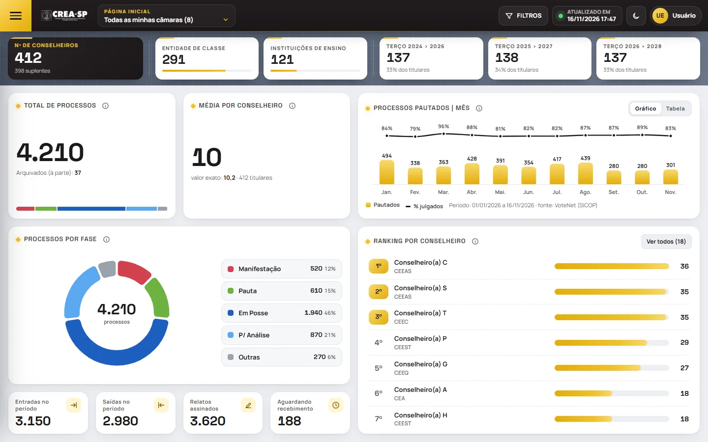
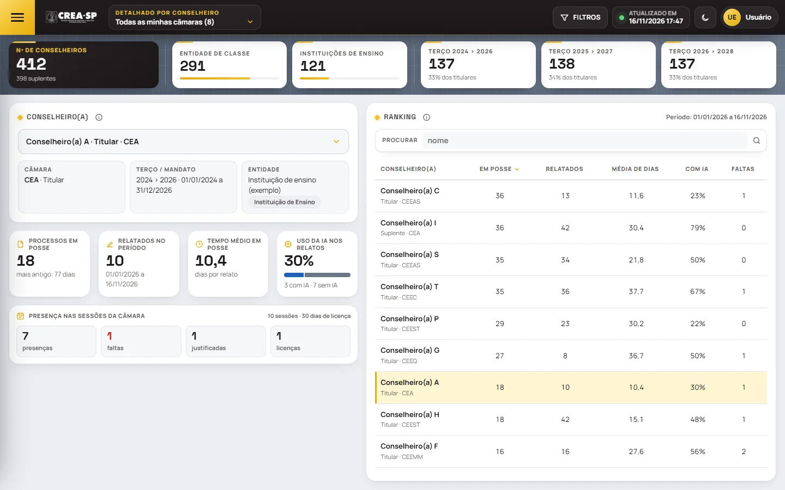
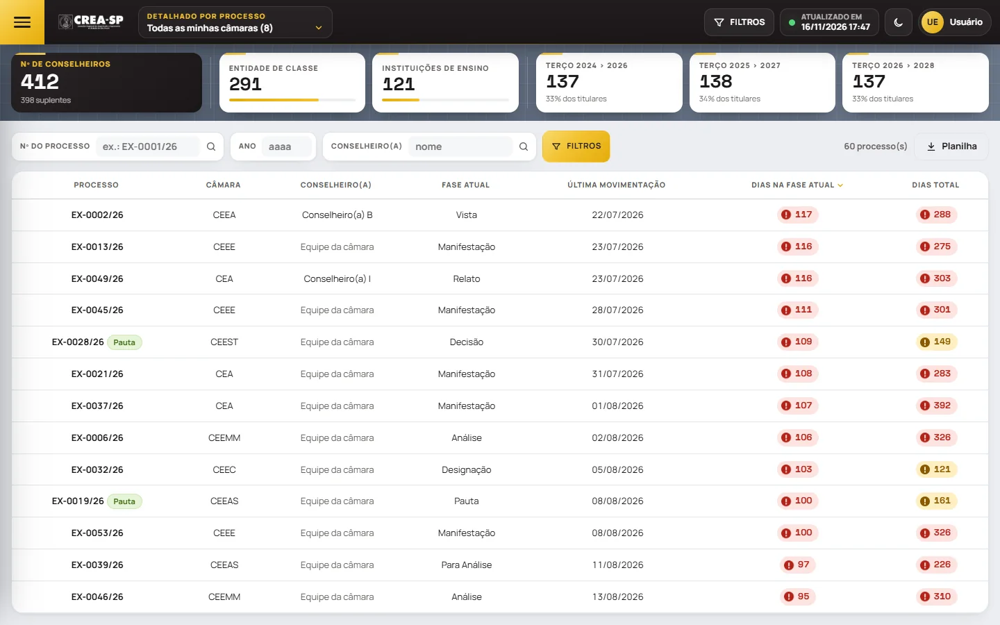
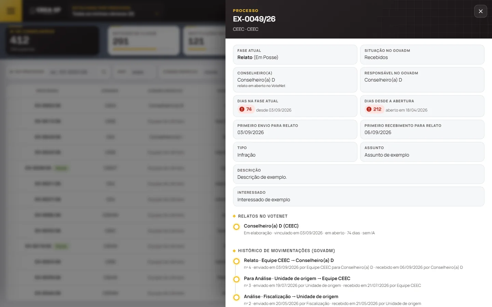
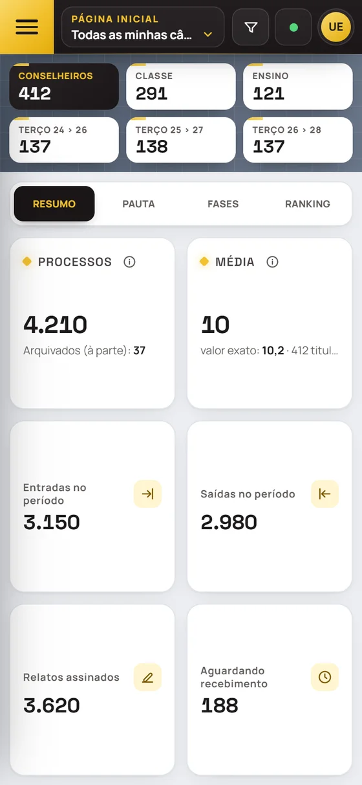

PortfólioSistemas e plataformas
Painel dos conselheiros do Crea-SP
Painel que reúne processos, pautas, relatos e votos dos conselheiros do Crea-SP em todas as câmaras, atualizado a partir de dois sistemas internos.
- Instituição
- Crea-SP
- Fontes
- SICOP e GovAdm
- Atualização
- Incremental
- Acesso
- Login e perfis
4.847processos nas câmaras
455assentos em 9 câmaras
81.119registros novos na última carga
Telas
Painel real com respostas do banco trocadas por dados fictícios.








No celular
Painel real com respostas do banco trocadas por dados fictícios.


Fluxo de páginas
Entrada
Logine-mail e senha; sessão encerra após 30 minutos sem uso
Filtros
Câmarasó as liberadas ao usuário
Períododata inicial e final
Fase e tipogrupos e fases do GovAdm
Páginas
Página inicialresumo, pauta, fases, ranking
Por conselheiroficha e ranking ordenável
Por processobusca, filtros e planilha
Administraçãousuários, acessos, regras, pendências
Detalhe
Lista do cartãoclique em um número
Ficha do processohistórico completo
O painel confere a cada 30 segundos se há dados novos e se redesenha sozinho.
Carga de dados
Fontes
SICOPSQL Server, só leitura: mandatos, relatos, pautas, presença
GovAdmrobô Playwright: relatório de processos e painéis das câmaras
Extração
Comparaçãochecksum por registro
Gravaçãosó o que é novo ou mudou
Banco
Cruzamentoconselheiro, processo e fase nos dois sistemas
Conferêncialista de pendências
Saída
Funções do paineluma consulta por página, com o perfil do usuário
Números da última carga
4.847
processos nas câmaras
455
assentos em 9 câmaras
81.119
registros novos gravados
12
arquivos SQL: esquema, acesso, cruzamento, painel e conferência
Regras do painel
- Alerta na faseAmarelo a partir de 30 dias e vermelho a partir de 60 dias na fase atual.
- Alerta totalAmarelo a partir de 90 dias e vermelho a partir de 180 dias desde a abertura.
- Grupos de faseManifestação, Pauta, Em Posse, P/ Análise e Outras; o administrador reagrupa.
- Uso de IAParte dos relatos assinados com apoio da IA do VoteNet, por conselheiro.
- AcessoCada usuário vê só as câmaras liberadas; toda ação fica registrada.
Tecnologias
SQL ServerPlaywrightSupabasePython